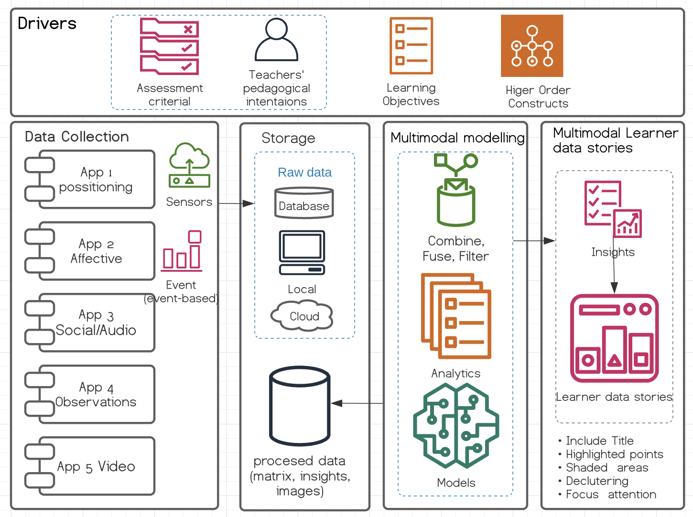

Multimodal Architecture
This site describes the different components of a multimodal architecture for education
Architecture Scope

Conceptual Architecture

Drivers
Drivers of this architecture are based on HCI approaches, the teacher' pedagogical intentions are elicit via a Rule-editor where the Assessment Criteria can be defined in a way that the system can understand what need to be
Data collection
Storage
Multimodal modelling
Multimodal learner data stories